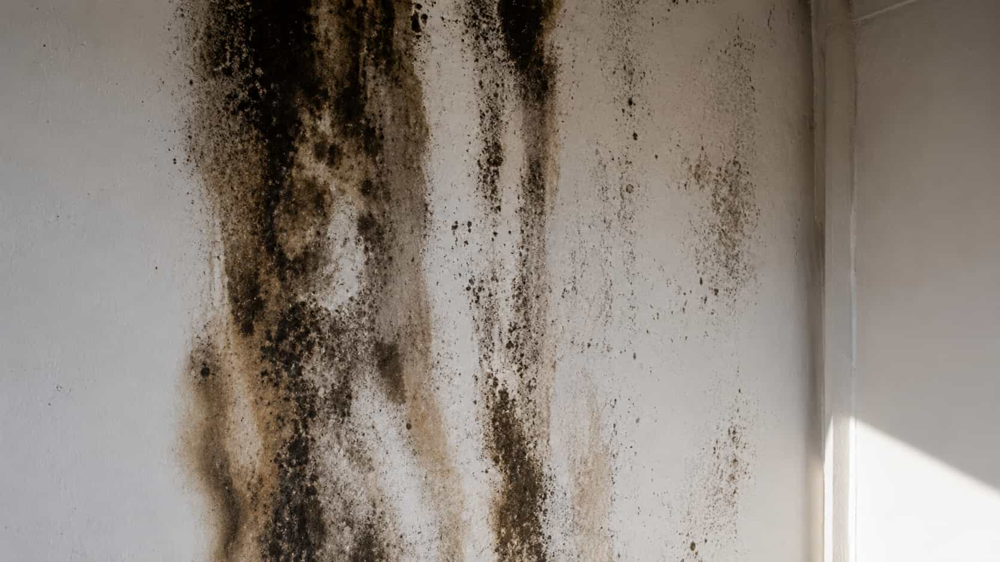
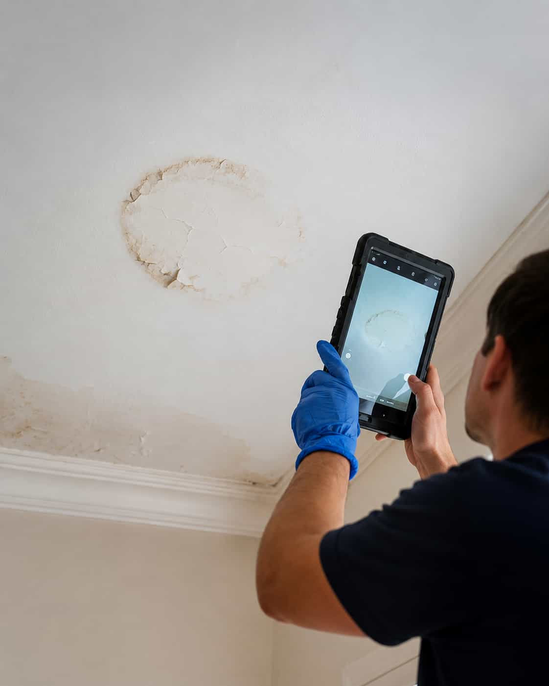

What moisture source is being discussed?
Compare whether providers mention seepage, humidity, condensation, drainage, leaks, or ventilation.

Common situations
MoldWise helps homeowners describe damp basement concerns and compare available provider options for next steps.

Request context
Providers may ask about wall stains, humidity, floor dampness, storage areas, drainage concerns, or previous water events.


Compare details
Ask providers how they discuss ventilation, recurring moisture, material conditions, and prevention planning.
Compare before choosing
Basement concerns often involve moisture patterns, ventilation, seepage, or recurring dampness, so provider details should be compared carefully.
Compare whether providers mention seepage, humidity, condensation, drainage, leaks, or ventilation.
Ask about walls, floors, storage areas, HVAC zones, corners, crawlspaces, and hidden materials.
Compare whether providers discuss humidity control, airflow, drainage, or future moisture prevention options.
Review what is included, what is excluded, timing, pricing details, and any provider-specific terms.
Share basement odor, dampness, visible signs, leak history, and affected materials.
Compare participating providers that may discuss basement mold-related requests.
Ask about moisture discussion, testing questions, materials, timing, and terms.
You choose whether to continue with any independent participating provider.
Matching process
The platform helps organize your basement concern request. Participating providers handle their own evaluation, proposed scope, pricing, scheduling, prevention discussion, and final service terms.